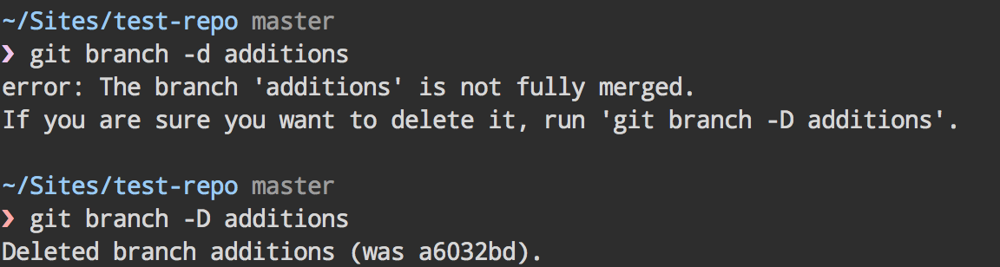

Not so Terminal after all
Version control and command-line concoctions for fun and profit
"git gets easier once you get the basic idea that branches are homeomorphic endofunctors mapping submanifolds of a Hilbert space."
— chi wai lau (@tabqwerty) March 9, 2011
How does Git really work?
But here are some things about Git that I find useful
Branches are nothing special, and not magical
A branch is a reference to a particular commit
This is sometimes called the 'tip'. If you make another commit on that branch, you automatically switch that branch to point to the most recent commit.
A commit is a record of what has changed since last time
(and as such will nearly always have a parent commit and a child commit)
If you branch off master but don't commit anything yet, all you've got are two branches pointing to the same commit
Once you commit something you've got divergent histories. You know all this.
You cannot ever 'break' Git
What do you think will happen here?
Absolutely bugger all except the deletion of a branch that points to the a6032bd commit as the tip of that branch
All the commits still exist and you can check them out at any point
git checkout does is point your current directory to a particular state of the project)

When you pull a branch, you're actually doing two things
git fetch
to update all the remote branches from your repository
git merge
to merge the remote branch into your local one
(a popular misconception is that your local branch and your remote branch are the same branch)
'pulling' origin/feature-x into local/feature-x
is technically the same process as
merging local/feature-x into local/master
I'd go mad if I just used the default command-line setup
Pretty Code
function linkify( selector ) {
if( supports3DTransforms ) {
var nodes = document.querySelectorAll( selector );
for( var i = 0, len = nodes.length; i < len; i++ ) {
var node = nodes[i];
if( !node.className ) {
node.className += ' roll';
}
}
}
}
Code syntax highlighting courtesy of highlight.js.